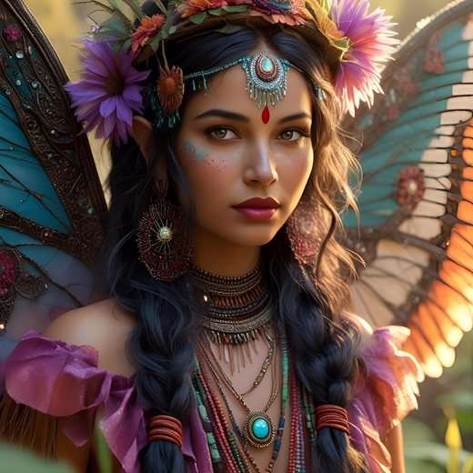

La Lissandière

Qui est-elle ?
- Une enchanteresse elfe. Son vrai nom est Creiddylad, la Dame des Futaies Bleues.
- Chaque pays lui donne un autre nom : la Lissandière dans le duché de Bromaël, Sumardis en Ouromagne, Wyddolème dans la Marche Franche, Guidolena à Ciudalia.
- Son domaine, les Futaies Bleues, est au-delà des Landes Grises, après les Marches Crépusculaires.
Sa magie
- Elle pratique la magie vive. Elle peut changer d'apparence, traverser de très grandes distances en peu de temps, et créer des illusions.
- Elle a été la disciple de l'archimage Gilliomer. On dit qu'elle l'a séduit pour lui prendre tous ses secrets. Le chat Mirabilis, l'ancien familier de Gilliomer, la sert quand elle le lui ordonne.
- Pour vivre ses amours avec son chevalier, Ædan de Vaumacel, elle peut créer un lieu hors du temps : un magnifique jardin, avec un riche pavillon.
Le Jeu des rubans
- Elle s'intéresse beaucoup aux enfants humains. Elle fait enlever de jeunes garçons prometteurs, et les soumet à des épreuves sous forme de jeu : le Jeu des rubans.
- Le gagnant devient son protégé, promis à un destin exceptionnel. Ce fut le cas de Devin de Belcastel, puis de Ferbasach ap Indulf.
- Elle peut aussi choisir des favoris sans enlèvement ni jeu. Par pitié, elle a veillé sur Lanval de Bromaël. Séduite par le courage et la droiture d'Ædan de Vaumacel, elle en a fait son chevalier servant.
- Les Aventureux du Bois oiselé (Amlyn, Cadellin et Tygerned) l'aident parfois à trouver des enfants.
- Autrefois, chercher le talent caché des enfants humains était une coutume des elfes. Creiddylad est la dernière à la suivre.
Ses haines
- Comme tous les elfes, elle hait les morts-vivants et les prêtres du Desséché.
- Elle déteste aussi les demi-elfes, parce qu'Ocann le Dévoreur en était un. Elle a jeté un sort au demi-elfe Coel : il ne peut plus vieillir, et reste sous la garde d'Ædan de Vaumacel, devenu immortel pour cette tâche.
Dans la campagne
- Aldaron porte un ruban de la Lissandière.
- C'est la fée Zorinia qui a mené les héros jusqu'à la Lissandière, la première fois.
Zorinia

- Une fée qui accompagne la Lissandière. C'est elle qui a conduit les héros jusqu'à sa maîtresse, lors de leur première rencontre.